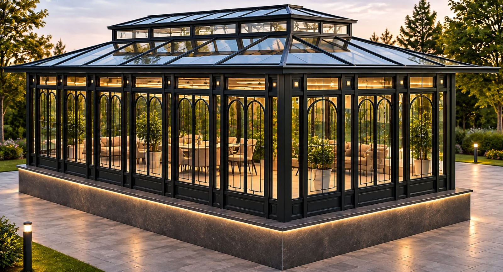
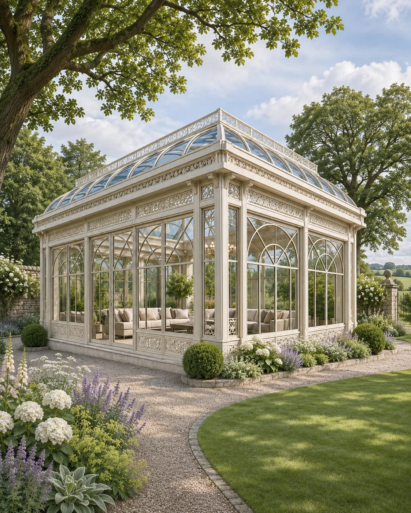

Solid and glazed in balance
An orangery feels like part of the house because not every surface is glass. Piers, a parapet or a solid section of wall frame the views and make the room easier to furnish.

The orangery, in steel and glass
Design visualisation
Marla Garden · London
An orangery is usually a more solid room than a conservatory: corners or piers framing tall windows, a flat perimeter roof and a glazed lantern rising from the middle. Most orangeries are built in timber or aluminium. We build the glazed structure in steel, which keeps frames slim, allows curved and ornamental detail, and suits both period and contemporary houses.
The form comes first. Decide how much of the room should be solid and how much glass, where the lantern sits, and how the new room meets the existing house. Where the design includes brick or rendered piers, these are built on site and coordinated with the steel frame, and the scope is agreed at the start.
An orangery feels like part of the house because not every surface is glass. Piers, a parapet or a solid section of wall frame the views and make the room easier to furnish.
A raised glazed lantern brings light into the centre of the room. Its proportions, pitch and any ornament on the ridge set the character of the whole structure.
Steel carries the same glass with narrower frames and glazing bars than a timber orangery, so more of each window is view rather than frame.
Because orangeries usually have more solid roof and wall than a conservatory, they are more likely to need building regulations approval. Check the position for your house before fixing the design.
There is no single legal definition, but in practice a conservatory is mostly glass, roof and walls, while an orangery has a larger proportion of solid wall and a solid perimeter roof around a central lantern. The difference matters for how the room feels, how it is heated and which regulations apply.
If you would prefer a lighter, fully glazed room, see our steel and glass conservatories. If you want the room to read as an extension of the house, an orangery is usually the better starting point.
Timber orangeries are traditional but need wide sections and regular redecoration. Aluminium is light but offers little scope for ornament. A steel frame can be slim, can be rolled into arches and curves, and can carry scrolled or cast detail on the lantern and eaves when the design calls for it.
Our comparison of steel, timber and uPVC conservatories sets out the trade-offs in more detail.
The steel frame is welded, ground and sanded smooth, then hot-dip galvanised so that a zinc coating protects it inside and out. It is then primed and painted in the colour chosen for the house, from matt black and deep green to cream or grey.
Many orangeries can be built under permitted development, but conservation areas, listed buildings and larger extensions need permission, and the more solid roof of an orangery often brings it under building regulations. Read our guides to building regulations for glass extensions and what a bespoke metal-framed conservatory costs in London.
Explore the collection
Compare roof forms, glazing patterns and the relationship to the garden. Open a design to explore its details and reference views.
 Curved Conservatories
Curved ConservatoriesDesign collection
A pale glazed extension with rounded bays and closely spaced vertical glazing. The design board brings the entrance and curved architectural details together.
Explore the design Glazed Garden Rooms
Glazed Garden RoomsDesign collection
A pale glazed room adjoins a house, with decorative window divisions and a garden path along the elevation. The attached setting changes how the structure meets the existing architecture.
Explore the design
Glazed Garden RoomsDesign collection
Dark and green finishes for a broad glazed room with a raised roof lantern.
Explore the design Garden Glasshouses
Garden GlasshousesDesign collection
A compact dark garden room with arched glazing and a raised roof lantern in a winter setting.
Explore the design
Glazed Garden RoomsDesign collection
A white-framed glazed room with a pitched roof and clear architectural lines. The pale structure stands against open sky and the planted edge of the garden.
Explore the design Glazed Garden Rooms
Glazed Garden RoomsDesign collection
A compact house-side extension with a glazed roof and dark framing.
Explore the designLook closer
 Classic
ClassicWhite framing, coloured glass accents and a rounded glazed bay set against a pale pink house.
Explore project Classic
ClassicA green conservatory with a central glazed gable, fan-shaped glazing details and garden-facing double doors.
Explore project Contemporary
ContemporaryA rounded glass extension beside a terracotta-coloured house, with a curved glazed roof and two outward-opening front windows.
Explore projectDevelop your project
Compare garden structure designs and bring your preferred references to the design discussion.
Our conservatory cost guide explains the decisions that shape a quotation.
Read the London conservatory planning guide for the questions to check for your site.
Share the setting and your preferred direction to discuss your garden project.
Planning your space
An orangery usually has more solid wall and a solid perimeter roof around a central glazed lantern. A conservatory is mostly glazed. The choice affects how the room feels, how it is heated and which regulations apply.
Steel frames are slimmer, can be curved, and can carry ornamental detail. Hot-dip galvanising and paint protect the steel, without the regular redecoration a timber frame needs.
Many can be built under permitted development, but conservation areas, listed buildings and larger extensions need permission. Orangeries are also more likely than conservatories to need building regulations approval.
Yes. Solid piers and walls are built on site to match the house, and the steel frame and lantern are designed to sit on them. Responsibilities for each part are agreed in the project scope.
Yes. Cresting, finials and scrolled brackets can be added to the lantern and eaves, or the frame can be kept plain for a contemporary house.
Your next space
Share the setting, the way you want to use the space and the designs you are drawn to.
Plan your project